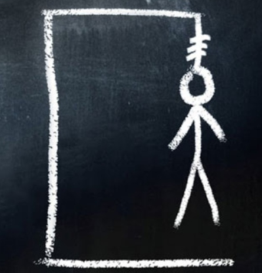

O homem de giz
Em 2016, Eddie se esforça para superar o passado, até que um dia ele e os amigos de infância recebem um mesmo aviso: o desenho de um homem de giz enforcado. Quando um dos amigos aparece morto, Eddie tem certeza de que precisa descobrir o que de fato aconteceu trinta anos atrás.
